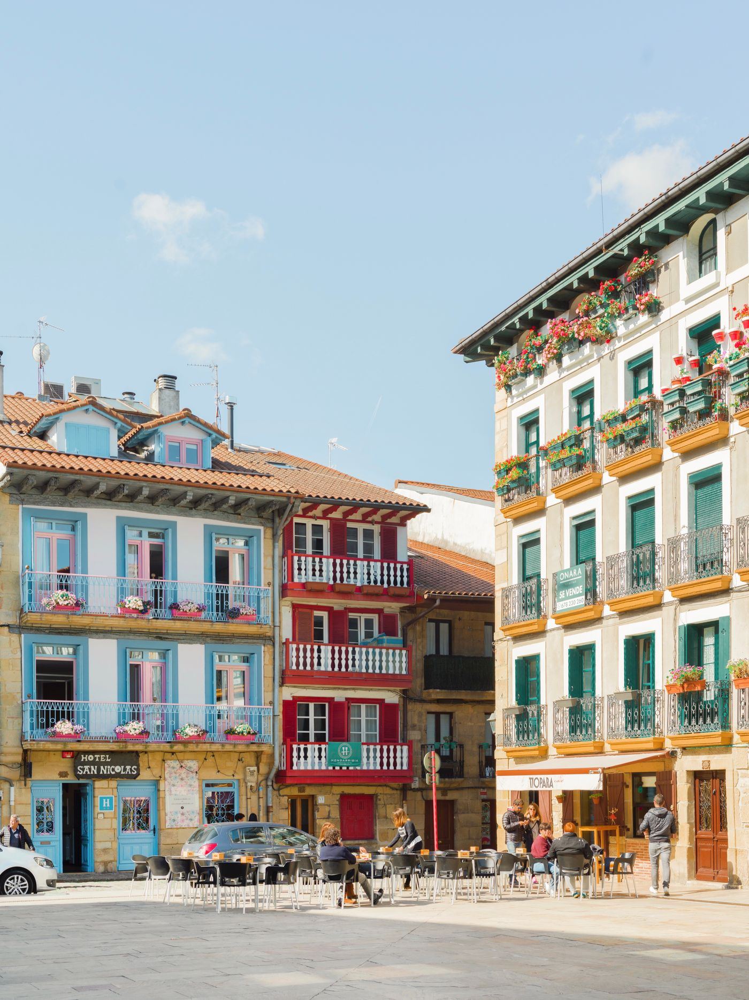
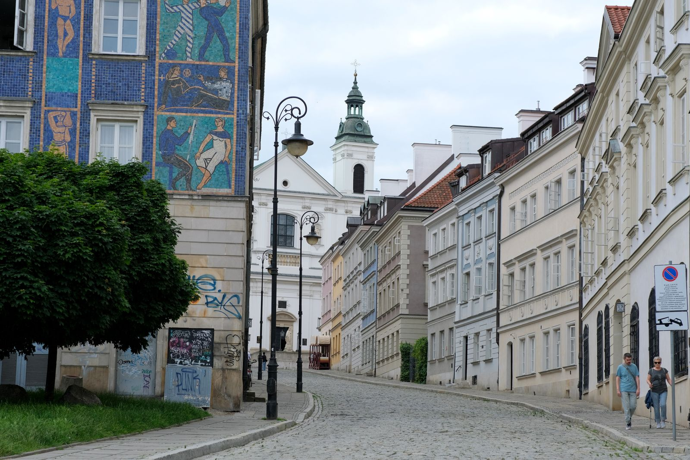
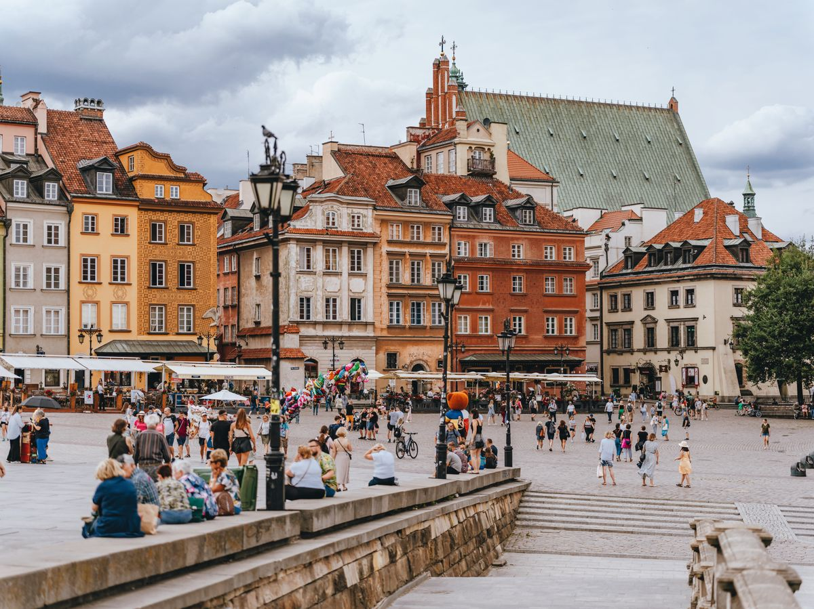

Naucz się robić lepsze zdjęcia telefonem. Na spacerze po Warszawie.
Poza Kadrem to spacery dla amatorów, którzy fotografują telefonem i chcą, żeby ich zdjęcia wreszcie wyglądały dobrze. Chodzimy razem po mieście, a na każdym przystanku ćwiczymy jedną rzecz. Nie potrzebujesz aparatu ani doświadczenia.

PrzedPo spacerze
Cztery przystanki, jedno lepsze zdjęcie.
Tak wygląda spacer. Na każdym przystanku zmieniamy w zdjęciu jedną rzecz.
- Przystanek 1
Wyprostuj horyzont
Włączasz siatkę w aparacie i trzymasz telefon prosto. Krzywe kamienice znikają.
- Przystanek 2
Złap światło
Widzisz, skąd pada światło, i ustawiasz jasność jednym ruchem palca.
- Przystanek 3
Zostaw bałagan poza kadrem
Zamiast przybliżać palcami, podchodzisz bliżej. Ściana i drzewo wypadają z kadru.
- Przystanek 4
Złap moment
Czekasz, aż ktoś wejdzie w kadr, ustawiasz ostrość dotknięciem i naciskasz.
Dla amatorów, którzy robią zdjęcia telefonem.
- Zaczynasz od zera
- Nie musisz nic wiedzieć o fotografii. Wszyscy zaczynamy od krzywej latarni.
- Masz tylko telefon
- Nie potrzebujesz aparatu. Ćwiczymy na telefonie, który już masz.
- Wolisz praktykę
- Żadnych wykładów o przysłonie. Uczysz się na ulicy, robiąc zdjęcia.
Spacerujemy po Warszawie i fotografujemy.
- ZbiórkaSpotykamy się w umówionym miejscu w mieście. Bierzesz naładowany telefon.
- PrzystankiIdziemy razem, a na każdym przystanku ćwiczymy jedną rzecz: horyzont, światło, kadr albo moment.
- PodpowiedziFotografujesz swoim telefonem, a prowadzący na bieżąco podpowiada, co zmienić.
- Twoje kadryNa koniec wybieramy Twoje najlepsze zdjęcia i omawiamy, co w nich zadziałało.
Warszawa jest pełna kadrów.
Symetria, ludzie, linie. Na spacerze uczysz się je zauważać.

Zapisz się na spacer.
Zostaw imię i e-mail. Odezwiemy się z najbliższym terminem i miejscem zbiórki.
Terminy, miejsce zbiórki, cena, czas trwania, osoba prowadząca i opinie uczestników.